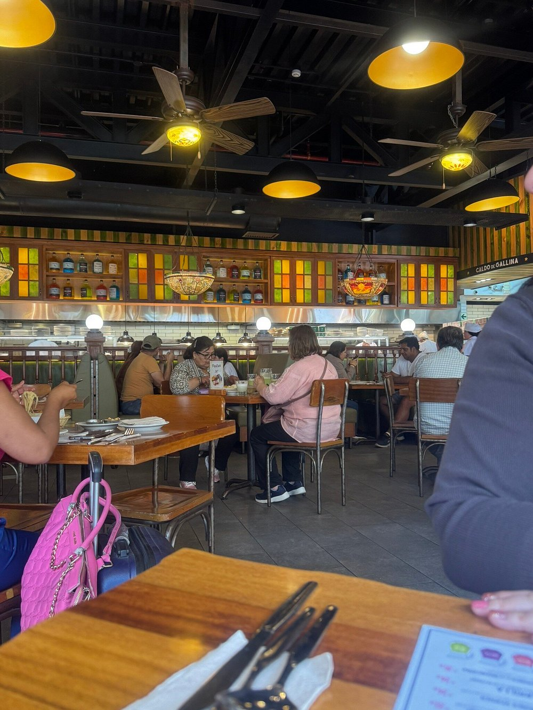
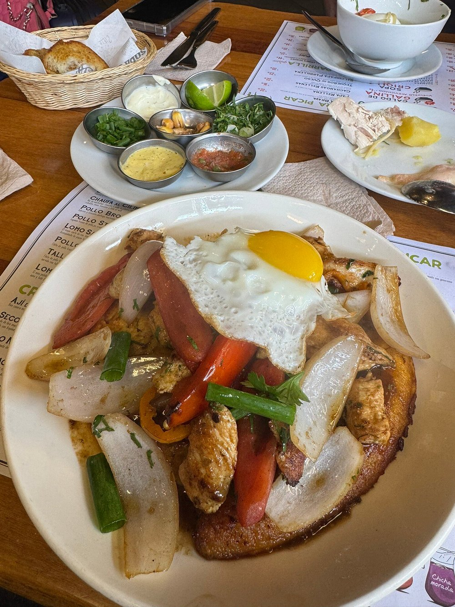
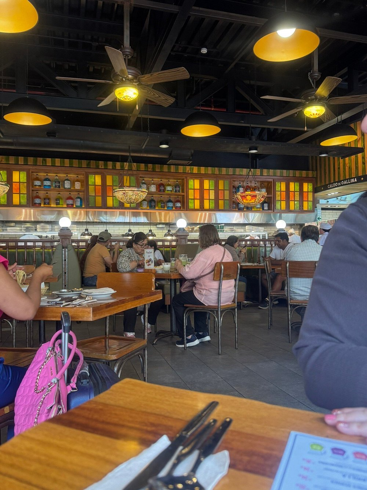
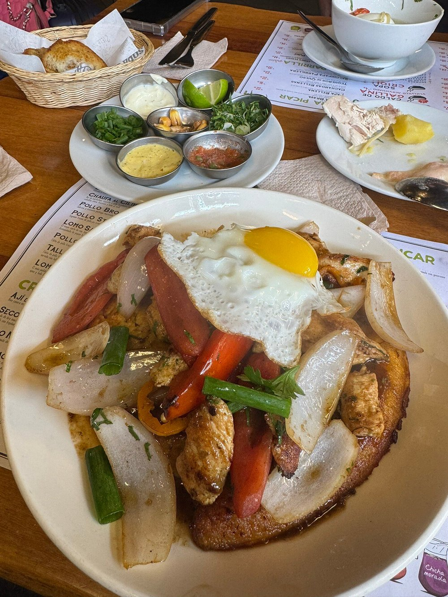

Siete Sopas nació con un propósito claro: mantener viva la tradición de las sopas peruanas.
En el vibrante Perú, donde cada plato cuenta una historia y cada familia tiene su secreto culinario, nació Siete Sopas. No fue una idea de marketing, sino el simple anhelo de compartir el calor de un hogar a través de los sabores más auténticos.
Todo comenzó con una receta familiar, de esas que pasan de generación en generación, guardadas con cariño en viejos cuadernos de cocina. Una sopa que no solo alimentaba el cuerpo, sino también el espíritu.
Nuestros Hitos y Recuerdos
Los Primeros Pasos (2010)
En un pequeño local del barrio, con solo un par de mesas y el aroma inconfundible del ají amarillo fresco, abrimos nuestras puertas. La gente venía por curiosidad y se quedaba por el sabor inigualable.
Creciendo con el Barrio (2016)
La voz corrió de boca en boca. Nuestro local se hizo pequeño y decidimos abrir un segundo espacio. Manteniendo siempre la esencia de la olla familiar, pero con la energía de una comunidad que nos adoptaba.
El Sabor que Trascendió (2025)
Hemos tenido el honor de recibir reconocimientos que, más allá de los premios, celebran la tradición y el cariño que ponemos en cada plato. Pero el verdadero galardón es ver a nuestros clientes volver, una y otra vez.
Nuestra Esencia: Pasión y Tradición
En Siete Sopas, creemos que la comida es mucho más que sustento; es cultura, es memoria, es encuentro. Por eso, cada ingrediente es seleccionado con esmero, cada receta se prepara con dedicación, honrando siempre la rica tradición culinaria de nuestro Perú.
Nos enorgullece ser un pedazo del Perú en cada cucharada, ofreciendo no solo un plato, sino una experiencia que evoca la calidez de un hogar. Gracias por ser parte de nuestra historia.
Un Vistazo a Nuestra Trayectoria
Desde nuestros humildes comienzos hasta hoy, cada momento ha sido un sabor más en nuestra historia.
 


